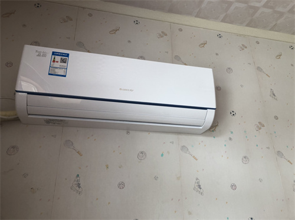

挂式空调清洗
空调清洗是维护空调的重要步骤之一，它可以帮助提高空调的性能和延长其寿命。在进行空调清洗时，需要注意一些细节，以确保清洗过程的有效性和安全性。
空调清洗的正确方法包括以下步骤：
-
- 关闭空调电源：在进行空调清洗之前，必须关闭空调电源，以确保安全。
-
- 外部清洗：清洗空调外部灰尘和污垢。使用软刷或湿布擦拭空调外壳，清洗时应注意不要使用刺激性或磨擦性强的清洁剂。
-
- 拆开室内机：将室内机拆下，以便清洗内部。
-
- 清洗过滤网：拆下室内机后，可以清洁其过滤网。过滤网应定期清洗，以确保空调的空气质量。
-
- 清洗散热片：空调的散热片是空调清洁最重要的部分。散热片的清洁需要使用专业的空调清洗剂，将清洗剂喷洒在散热片上，然后使用吸尘器吸走清洗后的污水。
-
- 消毒：使用专业的空调消毒剂对空调进行消毒，以杀灭病菌和细菌。
-
- 重新安装室内机：完成清洗和消毒后，将室内机重新安装回原位。
空调清洗要注意哪些细节
-
- 关闭空调电源
在进行空调清洗前，必须首先关闭空调电源，以确保安全。在某些情况下，例如当空调安装在墙上时，需要使用安全装置来确保清洗人员不会意外接触带电部件。
-
- 清理外部部件
外部部件包括散热器、风扇、过滤网和外壳等。这些部件通常需要定期清洗，以防止灰尘和杂物在空调内部堆积。可以使用软刷或湿布来清洁这些部件。需要特别注意的是，不要使用刺激性或腐蚀性清洁剂来清洁空调部件。
-
- 清洗内部部件
内部部件包括热交换器、蒸发器和压缩机等。这些部件需要定期清洗，以防止灰尘和杂物在空调内部堆积，从而提高空调性能和延长其寿命。可以使用专业清洗剂来清洗内部部件，但需要遵循清洗剂的使用说明。
-
- 消毒清洗
空调内部常常会有细菌和霉菌滋生，这会影响空调的卫生状况和空气质量。因此，定期对空调进行消毒清洗非常重要。可以使用消毒剂或紫外线灯来进行消毒清洗，但需要遵循消毒剂或紫外线灯的使用说明。